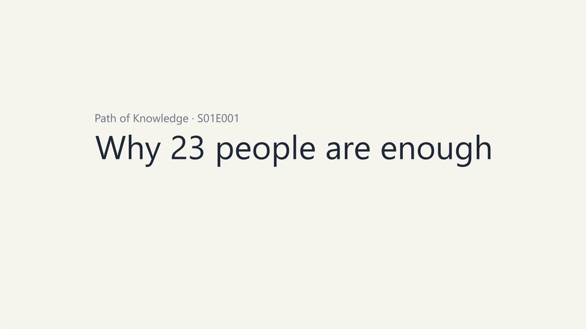

An Agent Skill that interviews you about the content, writes a beat-by-beat storyboard, narrates it, renders it with Manim, and QA-checks every beat — then keeps doing it in the same visual style for the whole series.
python -c "import urllib.request as u;exec(u.urlopen('https://raw.githubusercontent.com/kappa77/manim-math-video-studio/main/install.py').read().decode())"
One command on macOS, Linux, and Windows. Detects Claude Code, Codex, GitHub Copilot, and Pi; installs one shared environment; verifies it. Needs Python 3.10+.

It asks about the content — central question, audience, crux, visual approach, takeaway — before writing a single line of scene code. A theme is not a brief.
Each beat gets a measured TTS duration, and the animation follows it. Nothing is ever cut off mid-sentence, and subtitles stay in sync.
A series registry keeps template, palette, typography, and narration identity stable, so episode 12 still looks like episode 1.
JSON-schema validation for the brief and storyboard, an environment check, contact-sheet QA, and a self-test.
History, science, technology, literature, philosophy, art, tutorials — mathematics is one supported domain, not the whole product.
One skill tree, four frontmatter variants: Claude Code, Codex, GitHub Copilot, and Pi. Same workflow, same references, same scripts.
brief.jsonstoryboard.json| Agent | Unzip the release asset into | Invoke |
|---|---|---|
| Claude Code | ~/.claude/skills/ | /manim-math-video |
| Codex | ~/.codex/skills/ or ~/.agents/skills/ | $manim-math-video |
| GitHub Copilot | ~/.copilot/skills/ | /manim-math-video |
| Pi | ~/.pi/agent/skills/ | /skill:manim-math-video |
Each zip contains a single manim-math-video/ folder. Keep it complete — SKILL.md references the bundled scripts, references, and assets.